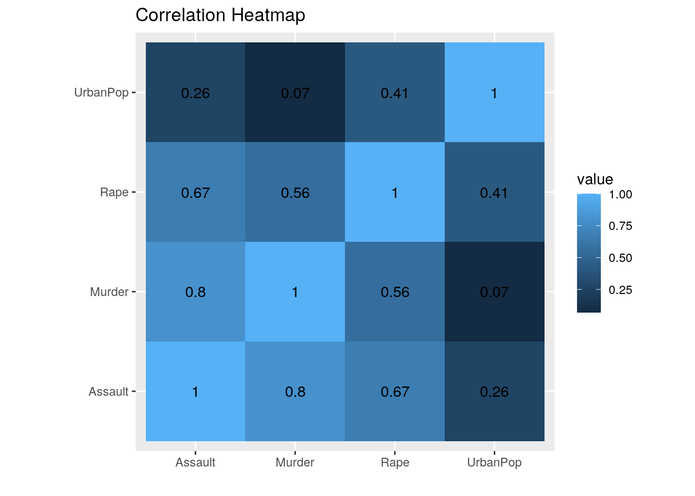

January 1, 0001
Caitlyn Wilson cbw2228
This project is due on Apr 4 at 11:59pm. Please submit as a knitted HTML file on Canvas.
For all questions, include the R commands/functions that you used to find your answer. Answers without supporting code will not receive credit.
Review of how to submit this assignment All projects will be completed using R Markdown. These
.Rmdfiles consist of text/syntax (formatted using Markdown) alongside embedded R code. When you have completed the assignment (by adding R code inside codeblocks and supporting text outside of the codeblocks), create your document as follows:
- Click the arrow next to the “Knit” button (above)
- Choose “Knit to HTML” and wait; fix any errors if applicable
- Go to Files pane and put checkmark next to the correct HTML file
- Click on the blue gear icon (“More”) and click Export
- Download the file and then upload to Canvas
0 (Introduction)
Write a narrative introductory paragraph or two describing the datasets you have chosen, the variables they contain, how they were acquired, and why they are interesting to you. Expand on potential associations you may expect, if any.
library(tidyverse)
library(kableExtra)
library(GGally)
library(cluster)library(tidyverse)
library(kableExtra)
library(GGally)
library(cluster)The first data frame that was chosen, USArrests, was collected in 1973 and has 50 observations with 4 variables. The 50 observations represent the 50 states of the United States of America. The four variables include Murder (number of murder-related arrests per 100,000), Assault (number of assault-related arrests per 100,000), UrbanPop (percent of urban population), and Rape (number of rape-related arrests per 100,000). The second data frame, state_info, has 51 observations and four variables. The 51 observations represent the 50 states of the United States of America, with the District of Columbia. The four variables include the state, the state_abbrev (the abbreviation of each state), the division (geographically describes the states) and the region (describes the location of the state). These datasets were accessed through the fivethirtyeight package. ‘USArrests’ and ‘state_info’ were interesting, because together they take a detailed look of not only the amount of arrests that happened in 1973, but also categorize them into the types of arrests that were made and specify the relative environments that they happened in.With this information, trends such as the most common type of arrests, states that have the most arrests for specific types of arrests made, and whether the presence of urban population plays a role in the likelihood of an arrest-type made can be found in from the two datasets. It is predicted the most common type of arrest will be assault, followed by rape and then murder. It is also predicted that there will be a strong, positive correlation between the amount of urban population present in a state and the amount of crime that happens.
1 (Tidying: Rearranging Wide/Long)
Tidy the datasets (using the tidyr functions pivot_longer/gather and/or pivot_wider/spread). If you data sets are already tidy, be sure to use those functions somewhere else in your project (e.g., for rearranging summary statistics). Document the process (describe in words what was done).
# found in #32 (Joining/Merging)
Join your datasets into one using a dplyr join function. If you have multiple observations on the joining variable in either dataset, fix this by collapsing via summarize. Discuss the process in words, including why you chose the join you did. Discuss which cases were dropped, if any, and potential problems with this.
library(fivethirtyeight)
state_info = state_info[-51, ]
USArrests <- tibble::rownames_to_column(USArrests,
"state")
inarr <- full_join(state_info, USArrests, by = "state")For the dataset ‘USArrests’, the states were originally structured as rownames. The states were shifted to a column named, “state”, so that the states could have their own designated column and the two datasets could have a common variable to join. In order to combine the data frames ‘USArrests’ and ‘state_info’, a ‘full_join’ was used as a way to retain all of the original data from both datasets. Before a ‘full_join’ was done, the ‘District of Columbia’ row was removed from ‘state_info’, because although it had the geographical descriptive variables, it was not included in the USArrests dataframe, so it would only produce ‘NA’s when looking at the numerical data. The two data frames were joined by the common variable of ‘state’. The datasets combined together were named as ‘inarr’.
3 (Wrangling)
Take
# your code here
inarr %>% select(-"state_abbrev") %>% select(-"state") %>%
select(-"division") %>% select(-"region") %>% summary() %>%
kbl() %>% kable_material_dark()| Murder | Assault | UrbanPop | Rape | |
|---|---|---|---|---|
| Min. : 0.800 | Min. : 45.0 | Min. :32.00 | Min. : 7.30 | |
| 1st Qu.: 4.075 | 1st Qu.:109.0 | 1st Qu.:54.50 | 1st Qu.:15.07 | |
| Median : 7.250 | Median :159.0 | Median :66.00 | Median :20.10 | |
| Mean : 7.788 | Mean :170.8 | Mean :65.54 | Mean :21.23 | |
| 3rd Qu.:11.250 | 3rd Qu.:249.0 | 3rd Qu.:77.75 | 3rd Qu.:26.18 | |
| Max. :17.400 | Max. :337.0 | Max. :91.00 | Max. :46.00 |
inarr %>% summarize_all(n_distinct) %>% kbl() %>% kable_material_dark()| state | state_abbrev | division | region | Murder | Assault | UrbanPop | Rape |
|---|---|---|---|---|---|---|---|
| 50 | 50 | 9 | 4 | 43 | 45 | 36 | 48 |
inarrcrime <- inarr %>% pivot_longer(c("Murder", "Assault",
"Rape"), names_to = "CrimeArrestType", values_to = "Crimesper100k")
inarrcrime %>% arrange(desc(Crimesper100k)) %>% head(10,
) %>% kbl() %>% kable_material_dark()| state | state_abbrev | division | region | UrbanPop | CrimeArrestType | Crimesper100k |
|---|---|---|---|---|---|---|
| North Carolina | NC | South Atlantic | South | 45 | Assault | 337 |
| Florida | FL | South Atlantic | South | 80 | Assault | 335 |
| Maryland | MD | South Atlantic | South | 67 | Assault | 300 |
| Arizona | AZ | Mountain | West | 80 | Assault | 294 |
| New Mexico | NM | Mountain | West | 70 | Assault | 285 |
| South Carolina | SC | South Atlantic | South | 48 | Assault | 279 |
| California | CA | Pacific | West | 91 | Assault | 276 |
| Alaska | AK | Pacific | West | 48 | Assault | 263 |
| Mississippi | MS | East South Central | South | 44 | Assault | 259 |
| Michigan | MI | East North Central | Midwest | 74 | Assault | 255 |
inarr %>% group_by(division, region) %>% summarise(Mean.UrbanPop = mean(UrbanPop),
SD.UrbanPop = sd(UrbanPop), Mean.Murder = mean(Murder),
SD.Murder = sd(Murder), Mean.Assault = mean(Assault),
SD.Assault = sd(Assault), Mean.Rape = mean(Rape),
SD.Rape = sd(Rape)) %>% kbl(col.names = c("Division",
"Region", "Mean UrbanPop", "UrbanPop SD", "Mean Murder",
"Murder SD", "Mean Assault", "Assault SD", "Mean Rape",
"Rape SD")) %>% kable_material_dark()| Division | Region | Mean UrbanPop | UrbanPop SD | Mean Murder | Murder SD | Mean Assault | Assault SD | Mean Rape | Rape SD |
|---|---|---|---|---|---|---|---|---|---|
| East North Central | Midwest | 72.60000 | 7.368853 | 7.920000 | 3.6341436 | 158.00000 | 89.69950 | 22.46000 | 8.679747 |
| East South Central | South | 53.25000 | 6.898067 | 13.050000 | 2.6185238 | 198.00000 | 66.29731 | 20.37500 | 4.850687 |
| Mid-Atlantic | Northeast | 82.33333 | 9.073772 | 8.266667 | 2.5146239 | 173.00000 | 74.98667 | 19.93333 | 5.685361 |
| Mountain | West | 69.50000 | 12.118463 | 7.275000 | 3.4362563 | 193.12500 | 76.53652 | 27.11250 | 11.727676 |
| New England | Northeast | 64.66667 | 21.878452 | 2.916667 | 0.9410986 | 103.50000 | 50.48861 | 10.70000 | 3.078311 |
| Pacific | West | 72.40000 | 16.456002 | 6.640000 | 2.6763781 | 177.80000 | 94.47592 | 32.16000 | 10.127339 |
| South Atlantic | South | 59.25000 | 14.179966 | 11.450000 | 4.3866681 | 242.12500 | 90.00069 | 21.23750 | 7.347679 |
| West North Central | Midwest | 58.57143 | 10.422046 | 4.114286 | 2.7144236 | 93.42857 | 44.63129 | 15.57143 | 6.595886 |
| West South Central | South | 66.00000 | 12.328828 | 10.875000 | 3.9322385 | 197.75000 | 40.34332 | 21.80000 | 2.731300 |
inarr %>% filter(UrbanPop == max(UrbanPop)) %>% arrange(desc(UrbanPop)) %>%
kbl() %>% kable_material_dark()| state | state_abbrev | division | region | Murder | Assault | UrbanPop | Rape |
|---|---|---|---|---|---|---|---|
| California | CA | Pacific | West | 9 | 276 | 91 | 40.6 |
inarr %>% filter(UrbanPop == min(UrbanPop)) %>% arrange(desc(UrbanPop)) %>%
kbl() %>% kable_material_dark()| state | state_abbrev | division | region | Murder | Assault | UrbanPop | Rape |
|---|---|---|---|---|---|---|---|
| Vermont | VT | New England | Northeast | 2.2 | 48 | 32 | 11.2 |
inarr %>% group_by(division, region) %>% summarize(mean_assault = mean(Assault,
na.rm = T), mean_murder = mean(Murder, na.rm = T),
mean_rape = mean(Rape, na.rm = T)) %>% arrange(desc(mean_assault)) %>%
kbl() %>% kable_material_dark()| division | region | mean_assault | mean_murder | mean_rape |
|---|---|---|---|---|
| South Atlantic | South | 242.12500 | 11.450000 | 21.23750 |
| East South Central | South | 198.00000 | 13.050000 | 20.37500 |
| West South Central | South | 197.75000 | 10.875000 | 21.80000 |
| Mountain | West | 193.12500 | 7.275000 | 27.11250 |
| Pacific | West | 177.80000 | 6.640000 | 32.16000 |
| Mid-Atlantic | Northeast | 173.00000 | 8.266667 | 19.93333 |
| East North Central | Midwest | 158.00000 | 7.920000 | 22.46000 |
| New England | Northeast | 103.50000 | 2.916667 | 10.70000 |
| West North Central | Midwest | 93.42857 | 4.114286 | 15.57143 |
inarr %>% group_by(region) %>% summarize(mean_assault = mean(Assault,
na.rm = T), sd_assault = sd(Assault, na.rm = T),
count_assault = n(), se_assault = (sd_assault/sqrt(count_assault))) %>%
kbl() %>% kable_material_dark()| region | mean_assault | sd_assault | count_assault | se_assault |
|---|---|---|---|---|
| Midwest | 120.3333 | 71.53935 | 12 | 20.65163 |
| Northeast | 126.6667 | 64.85754 | 9 | 21.61918 |
| South | 220.0000 | 74.20782 | 16 | 18.55195 |
| West | 187.2308 | 80.32761 | 13 | 22.27887 |
# Mean of Urban Population in a state is 159.
inarras <- mutate(inarr, Status.of.Assault.Average = ifelse(Assault >
159, "Above", "Below"))
mydata <- inarr[, c(5, 6, 7, 8)]
my <- cor(mydata)
round(my, 2) %>% kbl() %>% kable_material_dark()| Murder | Assault | UrbanPop | Rape | |
|---|---|---|---|---|
| Murder | 1.00 | 0.80 | 0.07 | 0.56 |
| Assault | 0.80 | 1.00 | 0.26 | 0.67 |
| UrbanPop | 0.07 | 0.26 | 1.00 | 0.41 |
| Rape | 0.56 | 0.67 | 0.41 | 1.00 |
For all of the numerical data for ‘inarr’ the minimum, maximum, and mean (among other statistics) were calculated. This information supported a previous prediction of the most common type of arrest being assault, followed by rape and then murder. For assault-related arrests, 170.8 arrests were made on average amongst the states, and there was a median of 159. For rape-related arrests, 21.23 arrests were made on average amongst the states, and there was a median of 20.1. For murder-related arrests, 7.79 arrests were made on average amongst the states, and there was a median of 7.25. As assault-related arrests are the leading type of arrest, the top ten locations of the arrests were led by North Carolina, followed by Florida and Maryland in 1973. Grouping by the division and region of a state, the top three highest mean assaults occurred in the South region with division South Atlantic, East South Central, and West South Central (respectively). The highest three averages for assault-related arrests are 242.125, 198, and 197.75. When looking at the amount of urban population in the United States, California had the highest percentage of 91%. The smallest amount of urban population found in the United States was 32%, found in Vermont.
4 (Visualizing)
Notice
# your code here
# Correlation Heatmap
inarr %>% select_if(is.numeric) %>% cor %>% as.data.frame %>%
rownames_to_column %>% pivot_longer(-1) %>% ggplot(aes(rowname,
name, fill = value)) + geom_tile() + geom_text(aes(label = round(value,
2))) + xlab("") + ylab("") + coord_fixed() + ggtitle("Correlation Heatmap") Based on the correlation between the numeric variables of ‘inarr’, the strongest correlation is between ‘Murder’ and ‘Assault’ with a correlation coefficient of 0.8. The weakest correlation is between ‘UrbanPop’ and ‘Murder’ with a correlation coefficient of 0.07. Overall, ‘UrbanPop’ has the weakest correlation with each of the other variables. This information suggests that the presence of an urban population in a state has a very weak relationship with the amount of arrests for the three types of crime, which is contrary to the prediction originally made that there would be a strong correlation between the amount of urban population present in a state and the amount of crime that occurs. The second strongest correlation is between ‘Rape’ and ‘Assault’ with 0.67, followed by ‘Murder’ and ‘Rape’ with a correlation of 0.56.
# your code here
# geom_point
plot1 <- ggplot(data = inarr, aes(x = Assault, y = Murder)) +
geom_point(aes(color = region), size = 0.5) + geom_point(aes(y = Murder,
color = region), stat = "summary", fun = mean,
size = 5, shape = 18) + geom_point(aes(y = Murder),
stat = "summary", fun = mean, size = 1, color = "black")
plot1 + ggtitle("Assault Arrests vs. Murder Arrests") +
ylab("Murder Arrests (per 100,000)") + xlab("Assault Arrests (per 100,000)") The plot is colored by region (Midwest, Northeast, South, and West). This graph was has plotted the mean murder arrests per 100,000 at each point for assault arrests per 100,000, colored and grouped by region. The overall mean murder arrests at each point for assault arrests per 100,000 was colored in black. A trend can be seen as states within the South having larger amounts of both assault arrests and murder arrests, combined. The state that has the lowest amount of assault arrests per 100,00 and murder arrests per 100,000 is found in the Midwest.
The plot is colored by region (Midwest, Northeast, South, and West). This graph was has plotted the mean murder arrests per 100,000 at each point for assault arrests per 100,000, colored and grouped by region. The overall mean murder arrests at each point for assault arrests per 100,000 was colored in black. A trend can be seen as states within the South having larger amounts of both assault arrests and murder arrests, combined. The state that has the lowest amount of assault arrests per 100,00 and murder arrests per 100,000 is found in the Midwest.
# your code here
# geombar
ggplot(data = inarrcrime, aes(x = CrimeArrestType,
fill = CrimeArrestType, y = Crimesper100k)) + geom_bar(stat = "identity") +
facet_wrap(~division, ncol = 3) + theme(axis.text.x = element_text(angle = 90)) +
ggtitle("Crime Arrest Type vs. Crimes per 100,00 for Each Division")For each division, the specific type of crime-related arrest and the amount of arrests made per 100,000 was graphed. Looking at the patterns, the South Atlantic has the highest amount of assault-related arrests and murder-related arrests. Mountain has the highest amount of rape-related arrests. New England has the lowest amount of murder-related arrests. Overall, for each division, assault-related arrests was the most prevalent arrest type, followed by rape-related arrests, and then murder-related arrests. This finding is consistent with the prediction of the order of amounts of arrests based on the type of crime.
5 (Dimensionality Reduction)
Create
# your code here
library(cluster)
pam_dat <- inarr %>% select_if(is.numeric)
sil_width <- vector()
for (i in 2:10) {
pam_fit <- pam(pam_dat, k = i)
sil_width[i] <- pam_fit$silinfo$avg.width
}
ggplot() + geom_line(aes(x = 1:10, y = sil_width)) +
scale_x_continuous(name = "k", breaks = 1:10)
pam_dat <- inarr %>% select_if(is.numeric)
pam1 <- pam_dat %>% pam(k = 2)
pam1$silinfo$avg.width## [1] 0.5926554final <- inarr %>% mutate(cluster = as.factor(pam1$clustering))
ggplot(final, aes(x = Assault, y = Murder, color = cluster)) +
geom_point()
library(GGally)
ggpairs(final, columns = c("Assault", "Rape", "Murder",
"UrbanPop"), aes(color = cluster))plot(pam1, which = 2)The first graph demonstrates that it is ideal to cluster the data by 2 (the peak). The second graph visualizes, in two dimensions, and colors by cluster of all four variables. Because this is only seen on a two dimensional level, it is difficult to decipher how some points were decided between cluster 1 and cluster 2 when the values are near each other on the two dimensional graph. For the graph using ‘ggpairs’, this is taking ‘inarr’ and plots all possible scatterplots. Each scatterplot is showing a slice of a four dimensional space. For dimensions related to crime types, the first cluster of states has the lowest rap-related arrests, murder-related arrests. For the dimensions that involve the percent of urban population, the dimensions that had lower crime-related arrests had a wider range of UrbanPop. The two clusters have an average silhouette width of 0.58 and 0.60, so this means that it is a reasonable structure for clustering.
## R version 3.6.1 (2019-07-05)
## Platform: x86_64-pc-linux-gnu (64-bit)
## Running under: Ubuntu 18.04.5 LTS
##
## Matrix products: default
## BLAS: /stor/system/opt/R/R-3.6.1/lib/R/lib/libRblas.so
## LAPACK: /stor/system/opt/R/R-3.6.1/lib/R/lib/libRlapack.so
##
## locale:
## [1] LC_CTYPE=en_US.UTF-8 LC_NUMERIC=C
## [3] LC_TIME=en_US.UTF-8 LC_COLLATE=en_US.UTF-8
## [5] LC_MONETARY=en_US.UTF-8 LC_MESSAGES=en_US.UTF-8
## [7] LC_PAPER=en_US.UTF-8 LC_NAME=C
## [9] LC_ADDRESS=C LC_TELEPHONE=C
## [11] LC_MEASUREMENT=en_US.UTF-8 LC_IDENTIFICATION=C
##
## attached base packages:
## [1] stats graphics grDevices utils datasets methods base
##
## other attached packages:
## [1] fivethirtyeight_0.6.1 cluster_2.1.0 GGally_2.1.0
## [4] kableExtra_1.3.4.9000 forcats_0.5.0 stringr_1.4.0
## [7] dplyr_1.0.2 purrr_0.3.4 readr_1.4.0
## [10] tidyr_1.1.2 tibble_3.1.0 ggplot2_3.3.3
## [13] tidyverse_1.3.0
##
## loaded via a namespace (and not attached):
## [1] Rcpp_1.0.5 svglite_1.2.3.2 lubridate_1.7.9.2 assertthat_0.2.1
## [5] digest_0.6.27 utf8_1.2.1 R6_2.5.0 cellranger_1.1.0
## [9] plyr_1.8.6 backports_1.2.1 reprex_0.3.0 evaluate_0.14
## [13] highr_0.8 httr_1.4.2 blogdown_0.20 pillar_1.5.1
## [17] gdtools_0.2.3 rlang_0.4.10 readxl_1.3.1 rstudioapi_0.13
## [21] rmarkdown_2.6 labeling_0.4.2 webshot_0.5.2 munsell_0.5.0
## [25] broom_0.7.3 compiler_3.6.1 modelr_0.1.8 xfun_0.20
## [29] pkgconfig_2.0.3 systemfonts_0.3.2 htmltools_0.5.0 tidyselect_1.1.0
## [33] bookdown_0.21 reshape_0.8.8 fansi_0.4.2 viridisLite_0.3.0
## [37] crayon_1.4.1 dbplyr_2.0.0 withr_2.3.0 grid_3.6.1
## [41] jsonlite_1.7.2 gtable_0.3.0 lifecycle_1.0.0 DBI_1.1.0
## [45] magrittr_2.0.1 formatR_1.7 scales_1.1.1 cli_2.3.1
## [49] stringi_1.5.3 debugme_1.1.0 farver_2.0.3 fs_1.5.0
## [53] xml2_1.3.2 ellipsis_0.3.1 generics_0.1.0 vctrs_0.3.7
## [57] RColorBrewer_1.1-2 tools_3.6.1 glue_1.4.2 hms_0.5.3
## [61] yaml_2.2.1 colorspace_2.0-0 rvest_0.3.6 knitr_1.30
## [65] haven_2.3.1## [1] "2021-05-07 06:37:01 CDT"## sysname
## "Linux"
## release
## "4.15.0-142-generic"
## version
## "#146-Ubuntu SMP Tue Apr 13 01:11:19 UTC 2021"
## nodename
## "educcomp04.ccbb.utexas.edu"
## machine
## "x86_64"
## login
## "unknown"
## user
## "cbw2228"
## effective_user
## "cbw2228"